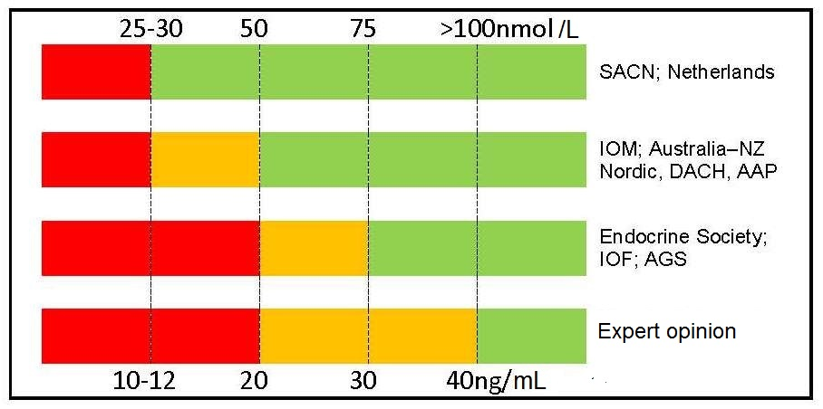

Table 18b.3. Recommendations for interpreting serum levels of 25-hydroxyvitamin D. Colour code: red denotes a state of severe deficiency (danger)
that has to be corrected without exception; orange denotes a state of mild deficiency (modest concern), in which intervention is desirable;
green denotes a state of sufficient supply that does not benefit from additional supplementation. AAP, American Academy of
Pediatrics; AGS, American Geriatrics Society; DACH, Deutschland, Austria and Confoederatio Helvetica;
IOF, International Osteoporosis Foundation; IOM, Institute of Medicine; SACN, Scientific Advisory Committee on Nutrition. Modified from Bouillon
(2017) Nature Reviews. Endocrinology, 13(8),
466–479..